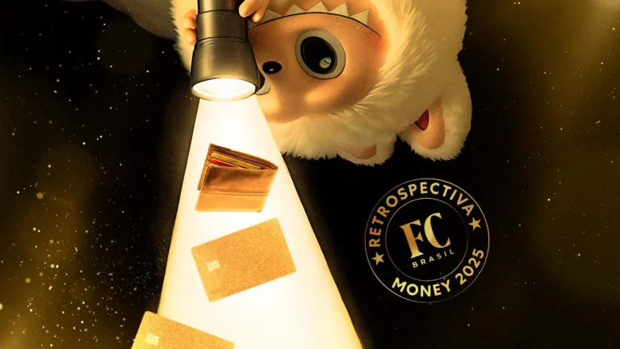

Você não sempre busca mais Labubus
Por: Lucas Coelho
Os bonecos Labubu viraram febre e mostram na prática como funciona a lei da oferta e da procura. Com o marketing de escassez e o apelo dos colecionáveis, o bichinho virou investimento e movimenta um mercado paralelo absurdo. Quer entender a economia global hoje? É só olhar a loucura que a galera faz pra comprar um boneco de pelúcia..